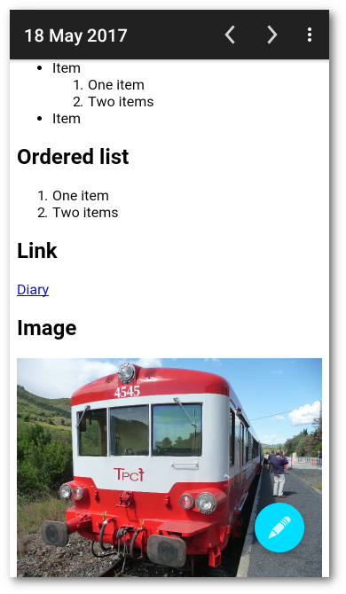
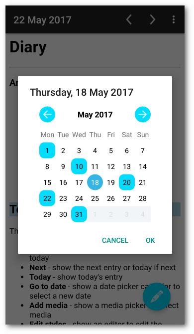
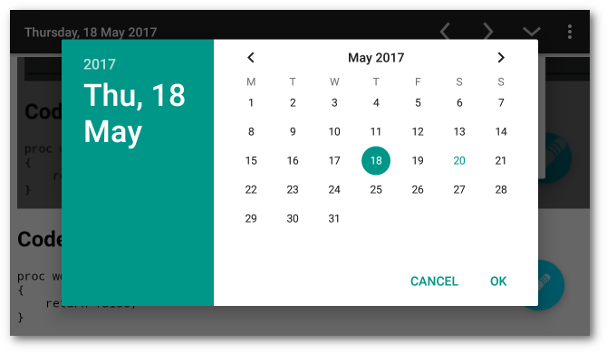
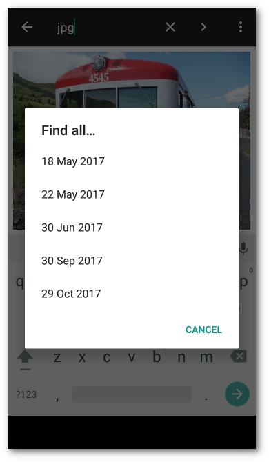
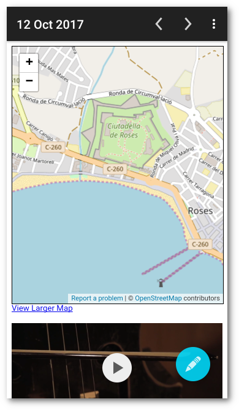
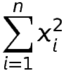
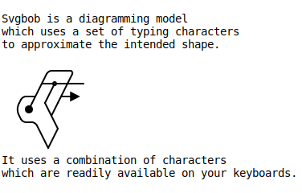
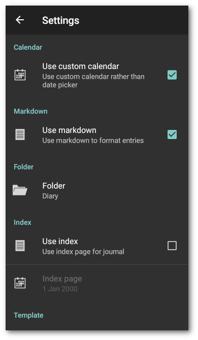

Introduction
Diary is an android diary which may be used as a diary or journal, or any way you choose.
 
Features
- Entries saved in plain text files
- Browse entries
- English, Catalan, Spanish, Italian, Japanese, German, French, Polish, Brazilian Portuguese, Dutch and simplified Chinese
- Choice of date picker calendars
- Diary entries may use markdown formatting
- Optional index page
- Optional entry template
- Display media stored in diary folders
- Display OpenStreetMap maps
- Print diary entries
- Share diary entries
- Add media from media providers
- Receive media from other apps
- Receive geo uris from other apps
- Incremental search of diary entries
- Add events to calendar
- Add events from calendar
- Show today’s entry in app widget
- Dark or light theme for editing
- Back up entries to a zip file
- Optional edit cursor position control
Using

Toolbar
The toolbar items:
- Previous – show the previous entry or today
- Next – show the next entry or today if next
- Today – show today’s entry
And on the menu:
- Go to date – show a date picker calendar to select a new date
- Index – go to index page if set
- Search – incremental search of diary entry
- Find all – find all diary entries containing search text
- Print – print current diary entry
- Share – share current diary entry
- Use template – use template for current entry if empty
- Add time – add the current time to diary entry
- Add events – add calendar events to diary entry
- Add media – show a media picker to select media
- Edit styles – show an editor to edit the custom styles
- Edit script – show an editor to edit custom javascript
- Backup – backup entries to a zip file
- Settings – show the settings
Swipe
Left and right
Swipe left and right in the diary page will show the next or previous day, or in the custom calendar will show the next or previous month.
Up and down
Swipe up and down with two fingers in the diary page will show the previous or next month, or in the custom calendar will show the previous or next year.
Double Tap
In the formatted view a double tap on the screen will switch to the edit view in approximately the same position in the markdown text. The accuracy is dependent on the text formatting and media in the entry.
Editing
In markdown mode the Edit button floating above the page allows editing entries. The Accept button restores the formatted view. A long touch on the button hides it until the device is rotated or a long touch on the page.
See Markdown for markdown syntax.
Scrolling
Scrolling the page up will temporarily hide the floating button. Scrolling down restores it.
Search
You may search diary entries, the search will update as text is entered into the search field. Use the search widget or keyboard action button to find the next match. To find and edit text, search in the markdown view, and then double tap where you want to edit. This will switch to the edit view at about the right place.
Find All

You may find all diary entries that contain the current search text. This menu item will only appear while the search widget is active. A dialog will pop up with a list of matching entries. Touch an entry to open that entry. You may repeat this or refine the search text to find the desired entry.
Index Page
You may use an index page. If an index page is set the app will start on that page unless receiving media from another app.See Links for the syntax for links to other diary entries and external sites.
Template
You may use an entry template. If a template is set it will be copied to today’s entry if it is empty.
Widget
The widget will show as much of the entry as will fit in the size chosen. Images, maps, and other media will not display because of android widget limitations. Bullet points do not work very well, but can be constructed using HTML entities so they appear the same in the widget:
• Test item<br>
• Test item
Help
Content

Text
You may receive text clips from another app. A date picker will pop up. The text will be appended to the entry selected.
Media
You may store media in the diary storage folders and reference them in
diary entries, so markdown text  will display
cat.jpg stored in the current month folder which is
Diary/<year>/<month> on the sdcard. You may either add media from
media providers like file managers or image managers or receive media
sent by other apps. Media added will be added at the current cursor
position. Media sent by other apps will pop up a date picker. The
media will be appended to the selected page. Content URIs
(content://) sent by some media providers and apps will be resolved
to file URIs (file:///) if possible. Media will be added using
markdown image syntax (), which will be parsed into
an HTML5 media player, text clips will be added as above, URLs will be
added as a link. Media added from removable SD cards not part of the
device storage may work but may not be persistent and is not supported.
Latex
Diary doesn’t support LaTeX, but it is possible to use an external site to add LaTeX formatted images.

\sum_{i=1}^{n}x_{i}^{2}

If you don’t intend to change the image, you can copy it and use that instead, which will then work offline.
Svgbob
Diary doesn’t support text diagrams, but will display SVG images produced by an online editor Svgbob Editor.

Links
You may put links in diary pages, so
[DuckDuckGo](https://duckduckgo.com) will show a link to
DuckDuckGo. Links will be followed if touched. Use the back button in
the toolbar or the navigation bar to return to the diary page. Links
to other diary pages may either be a relative reference to the entry
file [Sunday](25.txt), or use a date URI
[Whenever](date:17/10/2017). Use your local convention for short
form numeric dates (UK: dd/mm/yyyy, US: mm/dd/yyyy). Use the back
button to return. The back button may be used to retrace your path
through diary entries and external web pages. Use the Today button
to clear the navigation entries.
Maps
You may put OpenStreetMap maps in
diary pages with a geo URI . Geo uris
received from other apps will be converted to
 syntax in the diary entry.
Events
You may add an event to the calendar by adding a line to a diary entry
which begins with an at symbol (@) followed by a time and an event
title @ 10:30 Dentist. An event will be added to the calendar when
the entry is saved. A colon will be added after the ‘at’ symbol when
the event has been added @:10:30 Dentist. Use the Calendar app to
remove or edit events. Do not remove the colon from the diary entry or
the event will be added again. You may add events from the calendar to
the current diary entry. Events will be added from the relevant
calendar date.
Cursor Position
You may put a line in an entry to control or remember the edit cursor
position. This will not appear in the markdown view. Put [<]: # on a
line for the start of an entry, [>]: # for the end of an entry. Put
[#]: # for the cursor position to be remembered. There should be no
other text on the line. The current cursor position will be added when
the entry is saved [#]: # (nnn). Because entries are only saved if
they are changed, moving the cursor with no other change will not move
the saved position.
Note – Using this functionality will not stop reference type links
to the top of the current entry, [Top][#] working. However you can
more simply use an inline link [Top](#).
Styles
You may add custom styles to the markdown formatting by placing a
styles.css file in the Diary/css folder, which will replace the
built in styles file which simply limits the width of images to the
page width. Use the built in editor to create a styles file. You must
use the editor accept tick button to save the edits.
Caution – There is no such thing as a markdown syntax error, but syntax errors in a styles file may cause unpredictable results and affect all diary pages. See CSS Tutorial.
You may include the built in styles file with an @import statement
@import "file:///android_asset/styles.css"; or
@import url("file:///android_asset/styles.css");, which should be on
the first line.
Scripts
You may add custom javascript to be loaded into all diary pages by
placing a script.js file in the Diary/js folder. Use the built in
editor to create a script file. You must use the editor accept tick
button to save the edits. Errors in the script will be logged by the
WebView
which displays the page. See
Javascript tutorial.
If you want to use javascript libraries or write a large script it might be a good idea to use the Google Closure Compiler to check and minimise your code. It will handle multiple input files.
Manage
Backup
You may create a backup of all your entries in a zip file. The file
will have the same name as the diary folder, default Diary.zip.
Sync
Android cloud storage apps when last tested appeared not to be capable of syncing a real storage folder on the device. However Syncthing does just that and can sync your diary folder with other devices and desktop computers.
SD Cards
Android allows removable SD cards to be used like a USB stick or as part of the device storage. Storing diary entries on a removable SD card not part of the device storage may work on some devices, but is not supported. Adding media may also work, but may not be persistent.
Settings

Settings
- Use custom calendar – Use custom calendar that shows diary entries rather than date picker calendar
- Use markdown – Use markdown formatting for diary entries
- Folder – Change diary entry storage folder. Caution – diary entries and styles will not be moved
- Index – Set an index page. Use the date picker to choose a date.
- Template – Set a template page. Use the date picker to choose a date.
- Browser – Use browser for external links
- Copy images – Copy images to current folder
- Dark theme – Use dark theme for editing
- About – Show app version, licence and credits